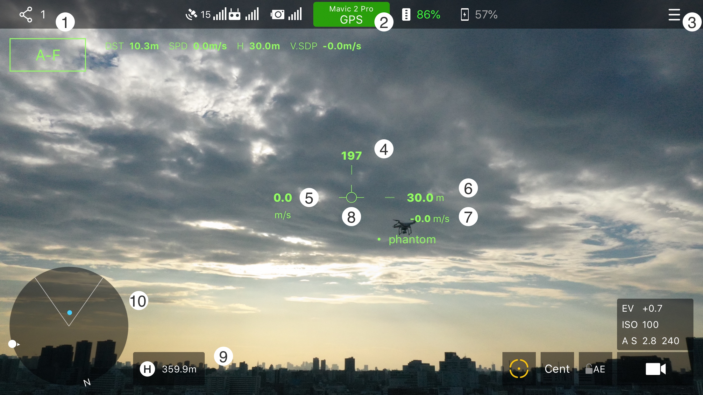
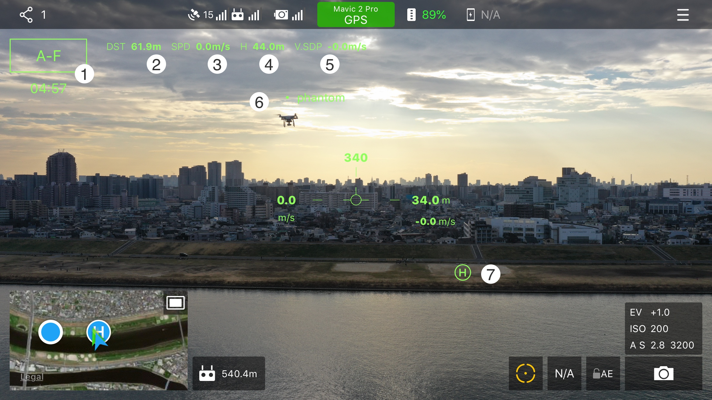

用户手册
Wingman是如何工作的
DJI提供了软件开发套件（DJI SDK），得以让第三方APP连接DJI的无人机，获取飞机的数据，并且控制飞机飞行。
禁飞区相关的行为由DJI SDK进行控制，即使用户试图在禁飞区中起飞，DJI SDK会限制飞机的行为达到禁飞目的。
在正常飞行时，Wingman程序会监控飞机的各种状态，但不会对飞行器的飞行产生任何影响，如果无人机发生了突然断电，失去动力，甚至失控，这些都是由于飞机控制系统的行为所导致的。
Basic Flight HUD
- 打开点对点网络设置面板 (已连接的设备数量)
- 打开飞机详细状态信息面板
- 主设置选项面板
- 航向角 (0度为正北)
- 水平速度值 (m/s)
- 高度值 (m)
- 垂直方向速度值 (m/s)
- 姿态指示器
- 飞机与返航点的距离
- 迷你地图 / 雷达画面切换

点对点网络设置面板
- 搜索连接设备入口
- 已连接的设备
- 呼号设置
- 角色设置 (长机 / 僚机)
- 网络开关设置 (开/关)
开始连接其他飞手之前，你需要设置好呼号与角色，开启点对点网络开关后，就能与身边的其他飞手热点搜索到对方并连接。 进入搜索连接画面，选择一个热点并等待对方同意连接。完成后回到先前的菜单面板，所有已连接的热点都会显示在搜多按钮的旁边，你可以选一个作为你的跟随目标。 Wingman最大支持4个热点同时连接，以实现多台僚机跟随同一长机。
选择一个热点作为目标后
- 自动跟随开关 (下面会显示自动跟随的可用燃料)
- 你与目标之间的距离 (m)
- 目标水平速度值 (m/s)
- 目标高度 (m)
- 目标垂直速度 (m/s)
- 目标位置标识
- 返航点位置标识

开启自动跟随后
- 雷达画面
- 目标方位指示
- 自动跟随控制点
- 飞手位置指示
自动跟随如何工作的
当自动跟随成功开启后，跟随者的模式将变为“Joystick”模式，得以收到APP给出的飞行指令，这些指令根据当前飞机与长机的位置，速度，高度，距离所决定，以此实现与长机保持一个固定的相对位置。选择了一个长机作为目标，并开启自动跟随，在雷达画面上将出现一个控制点，你的飞机将一直试图接近到达该控制点。同时飞手可以通过摇杆微调该控制点，以调整和长机所需保持的相对位置与距离。
用例:
两架飞机在同一高度起飞，长机爬升至50m，僚机爬升至53m，当用户启用自动跟随后，加入当时僚机相对长机的偏差在往北5m，往西4m，往上3m，长机开始水平移动以后，僚机也会往相同的方向移动，最后僚机与长机的相对偏差依旧不会改变。假如长机下降高度至25m，僚机就会下降高度至28m。
当自动跟随开启期间，飞手可以调整机头朝向（YAW）并且不会对自动飞行有任何影响。同时飞手也能控制飞机姿态的pitch/roll方向或者是垂直方向从而在各个方向上调整与长机保持的相对位置。
安全考虑
Wingman做了一定的保护措施防止自动飞行时意外情况的发生，发生以下情况时自动跟随将被中止。
- 长机或者僚机任意一方丢失了卫星信号
- 长机或者僚机任意一方丢失了遥控器信号
- 长机的运动状态出现了不正常的数值
- 僚机低于自动跟随高度下限设定值
- APP被用户关闭
✳ 当APP被系统非正常关闭时，自动跟随的“Joystick”模式可能未能被APP关闭，此时飞机会停留在当前位置，需要用户通过切换遥控器上的飞行模式拨杆退出“Joystick”模式来夺回遥控器控制权。
当长机或者是僚机失去遥控器连接信号后，飞机会执行和DJI GO中同样的自动返航程序。
✳ 因为不同飞机机型运动性能差异，网络延迟，GPS位置误差，气压机的误差，环境风的影响，僚机的自动跟随反应无法完全和长机同步，因此需要用户在飞行中注意：
- 请用户已熟悉DJI无人机的基本飞行操作。
- 请在开阔的地方，没有障碍物且不会影响他人人身财产安全的环境下使用，并且有良好的卫星信号接收情况。
- 僚机可以设置一个最低安全高度，在跟随着长机下降时，僚机不会低于该设定高度，以免当前僚机地面情况较为复杂而发生意外。
- 爬升到最低安全高度之上后，允许僚机开启自动跟随，并在降落前关闭自动跟随。
- 选择的相对位置不能过近，直线距离至少大于10m，同时避免在同一水平面，避免在运动方向的轴线上，以免长机的运动状况发生突变而导致碰撞发生。
- 长机的飞行机动会时刻影响着僚机，与其他飞机保持一个安全距离，避免进行暴力的加速减速运动。
- 用户能通过手机界面的按钮，或者直接切换遥控器上的飞行模式中止自动跟随功能。
- 使用自动跟随时请用户时刻注意飞行器的动向，当有可预见的危险情况发生，请立即中断自动跟随。
如需反馈
如果对该应用程序有任何的疑问或建议, 请随时联系我们. Email:dronewingman.app@gmail.com